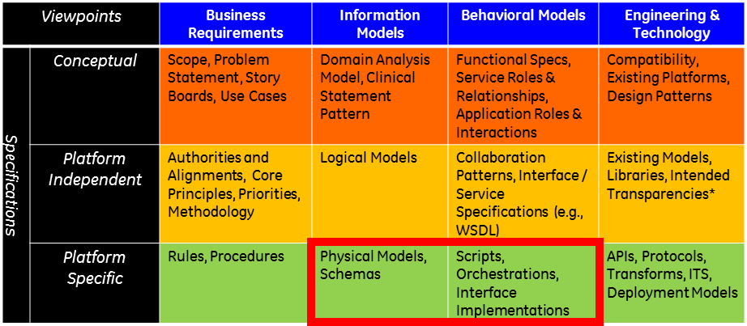
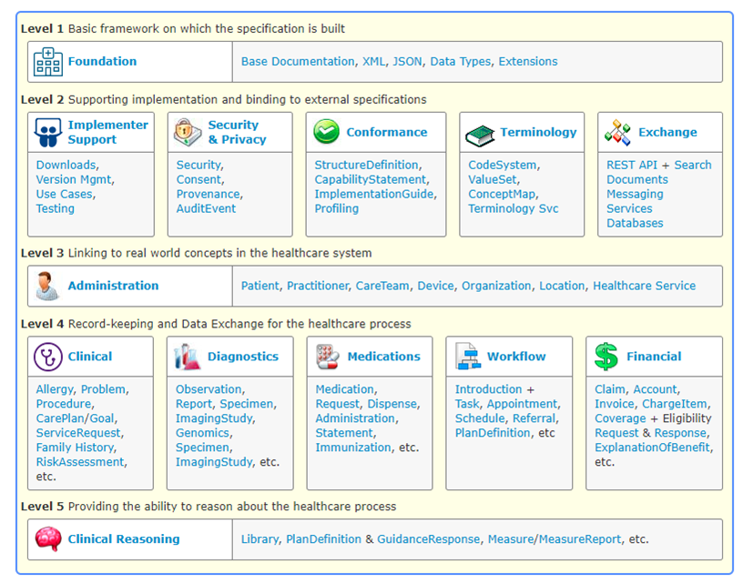
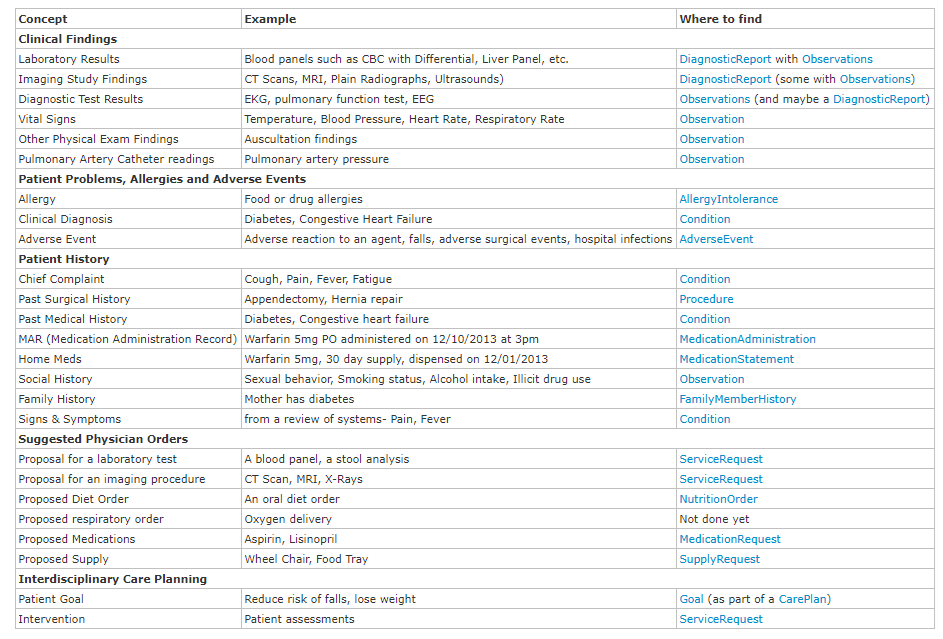
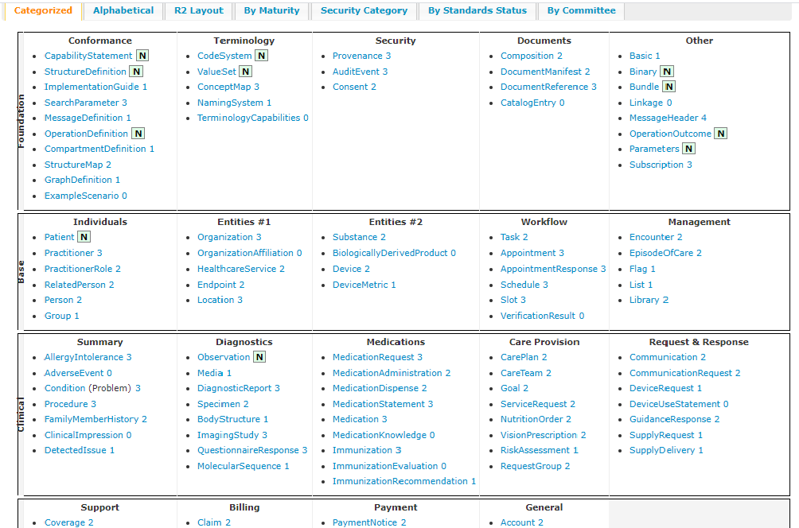
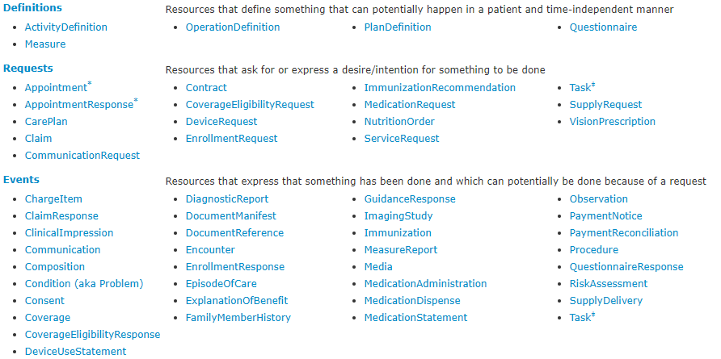

DISI | About FHIR (in natmaterial\health)
Introduction to FHIR (Fast Healthcare Interoperability Resources)
Starting from mid-2009, the v3/RIM specifications were designed to address one of the principal limitations of the V2 specifications – the ad-hoc and inconsistent nature of the information exchanged using it.CDA, which is part of the v3/RIM specifications, has been widely adopted for information exchange between loosely coupled healthcare systems around the world.
However, in spite of its success in these terms, it was clear that there were several issues that brought v3 and the HL7 organisation itself to a crossroads.
- Consistency: Across the healthcare system, there is little
consensus about what information should be used, how it should be represented,
and when it should be exchanged. While v3 excelled at producing consistent definitions,
the consequence of this was that it was actually harder to use it inconsistently,
and v3's rigorous consistency turned out to be a false advantage,
since across the healthcare system, there is little
consensus about what information should be used, how it should be represented,
and when it should be exchanged. (BG-330)
- Complexity: in order to implement successfully, the specification designers and the
implementers must read and understand many layers of v3/RIM documents. (BG-330)
Further, the custom tooling stack that HL7 had to produce to string all the layers together requires its own expertise, and the end outcome is engineering artefacts that do not align with what else is commonly used in the industry. (BG-330)
Truly successful implementations of v3 or CDA – and there are some – require an extensive custom stack of libraries and templates. (BG-330)
In response to the growing awareness of this issue, HL7 created a ‘Fresh Look’ task force that was asked to examine the best ways HL7 could create interoperability solutions, with no pre-conditions on what those solutions might be. (BG-330)
The FHIR team has adopted a manifesto, a declaration of the goals and priorities of the FHIR project. (BG-344)
Interoperability specifications can be grouped into one of several different approaches: (BG-331)
Messages : define a series of fixed information that can be exchanged between applications when a specifi c event occurs.Services : define a set of functional operations that one system exposes for others to use, along with the expectations of behaviour around these.Documents : define a set of fixed information packages that can be exchanged or stored for later use.
From: HL7 / FHIR Infrastructure homeThe |
From: HL7 / FHIR Infrastructure overviewFHIR is a healthcare information exchange standard that makes use of an HL7-defined set of 'resources' to support information sharing by a variety of means, including documents, messages, services and RESTful interfaces.FHIR defines resources for clinical and administrative content (e.g. Observation, Patient, etc.) as well as resources for 'infrastructure' purposes. Some of these infrastructure resources are used to define the standard itself – i.e. what the characteristics of resources are, what codes can be used in them, etc. This set of infrastructure resources is referred to as the 'Conformance resources'. |
From: FHIR 2.16 FHIR Overview - Architects.At its core, FHIR contains two primary components:
|
 |
From: FHIR 1.9 Getting Started with FHIR.FHIR is a platform specification that defines a set of capabilities use across the healthcare process, in all jurisdictions, and in lots of different contexts.While the basics of the FHIR specification are relatively straight-forward (see the Overviews:
Generally, an implementer needs to resolve: How will information be exchanged? (see Foundation Module) How are terminologies being used? (see Terminology Module) How will the information be secured? (see Security and Privacy Module) When is information exchanged? (See Workflow Module) What information is going to be exchanged?In order to help implementers find their way around the specification and answer these questions, it is organized into a set of "modules". Each module represents a different functional area of the specification. Dependencies between the modules are mainly downwards, with some horizontal dependencies.
In addition to the
|
 |
From: FHIR 2.31 Guide to ResourcesThe FHIR specification defines a set of resources, and an infrastructure for handling resources. In order to use FHIR to create solutions for integration requirements, implementers must map their problems to resources and their content.This page describes the resources and their functional intent in more detail to assist implementers to understand their purpose and scope, and their supporting classifications. |
 |
FHIR and RESTFHIR aspires to follow RESTful principles as much as possible.... (BG-331)... by adopting the form of interoperability, called an Application Programming Interface ( . ... rather the form based on the Service Orientated Architecture ( The FHIR ResourcesAs a RESTful specification, FHIR is organized around the concept of a repository which is a list of resources of a particular kind (BG-333)FHIR defines around 100 type of resources (BG-333), categorized as reported in FHIR 1.2 Resource Index) |
 |
From: FHIR 12.5.1 Workflow Resource PatternsMany FHIR resources are used to describe entities and roles (patients, medications, etc.) or infrastructure (structure definitions, value sets, etc.).However, a large proportion of the FHIR resources are devoted to the
 Note that requests, events and definitions don't exist in a 1:1:1 relationship. The set of common linkages should be asserted in their respective resources. The specific types of responses for a given request will be governed by the The table summarizes the list of workflow-relevant resources |
 |
From 12.6 Workflow Execution and Communication PatternsMany FHIR resources can be used within workflowsWhen we want to manage workflow execution with FHIR, there are several mechanisms available. Prior to reviewing this list of options ( 12.6.3 List of patterns), readers are encouraged to be familiar with the following pages and resources:
The workflow state is represented by the 12.1 Resource In addition to managing workflow with FHIR, there are also cases where management of workflow execution is not necessary, and supporting workflow becomes simply the use of the resource patterns in an |
12.6.2 Workflow State.  12.6.2.1 Example: Workflow states for a lab order for a blood test 12.6.2.2 Example: Workflow states for a referral from a PCP to a specialist 12.6.3 List of patterns |
From: FHIR 5.6 Resource CompartmentDefinition:
Each resource may belong to one or more logical compartments. A compartment is a logical grouping of resources which share a common property.
- CSpace-FHIR: a standard vocabulary for health-care management
- The CSpace-FHIR is based on resources that can be accessed in RESTful way
- Each resources can be represented in several ways, by using several languages: UML, Xml, Json, Turtle (RDF)
- FHIR defines around 100 type of resources (BG-333), categorized as follows
(see FHIR 1.2 Resource Index) :
Administration Clinical Summary, Diagnostics, Medications, Care Provision, Request & Response Infrastructure Bundle, List, AuditEvent Financial Claim, Coverage, ExplanationOfBenefit Conformance Conformance, StructureDefinition, ValueSet
FHIR (Fast Healthcare Interoperability Resources)
As a RESTful specification,Most of the significant content of the FHIR specification is in the definition of the particular types of resource. FHIR defines around 100 types of resource, representing widely different types of content.(BG-334) Most of the functionality of a FHIR interface is provided by three services (pg. 334)
Instance Service Type Service System Service
In addition to these base services that apply to all the types of resources defined by FHIR, FHIR allows for the additional special services that provide specific functionality beyond simple CRUD services. FHIR defi nes a number of useful services itself, such as asking a server whether it considers a resource is valid, linking two patients, or retrieving all the records associated with a particular patient. (pg. 334)
Servers can define their own addition services.(pg. 334)
The Relationship between FHIR and other HL7 Standards
- 7.17.2 HL7 v3 (and ISO 21090)
- 7.17.2 HL7 v3 (and ISO 21090)
- 7.17.3 Clinical Document Architecture (CDA)